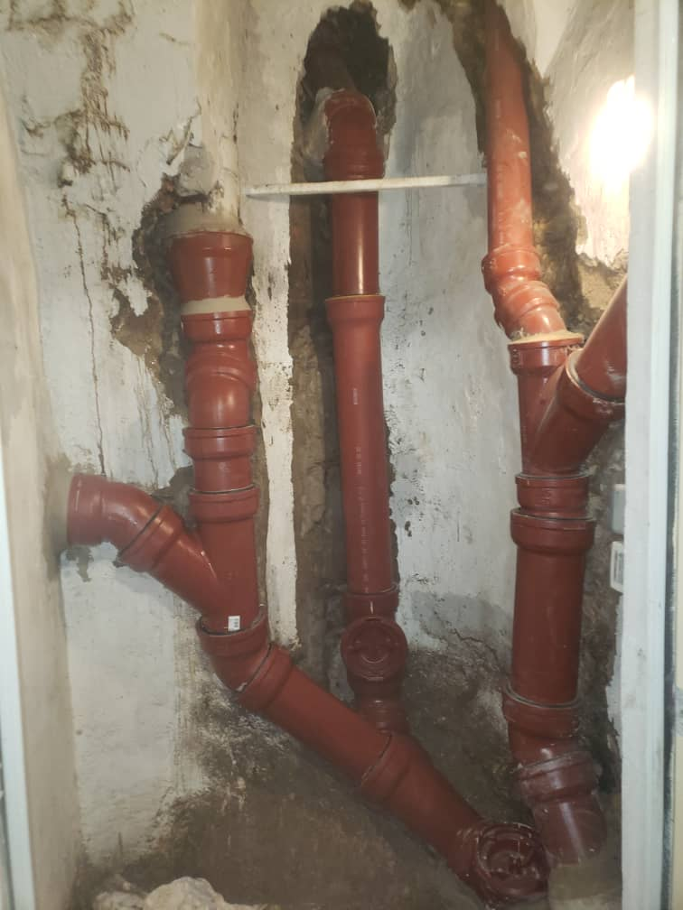
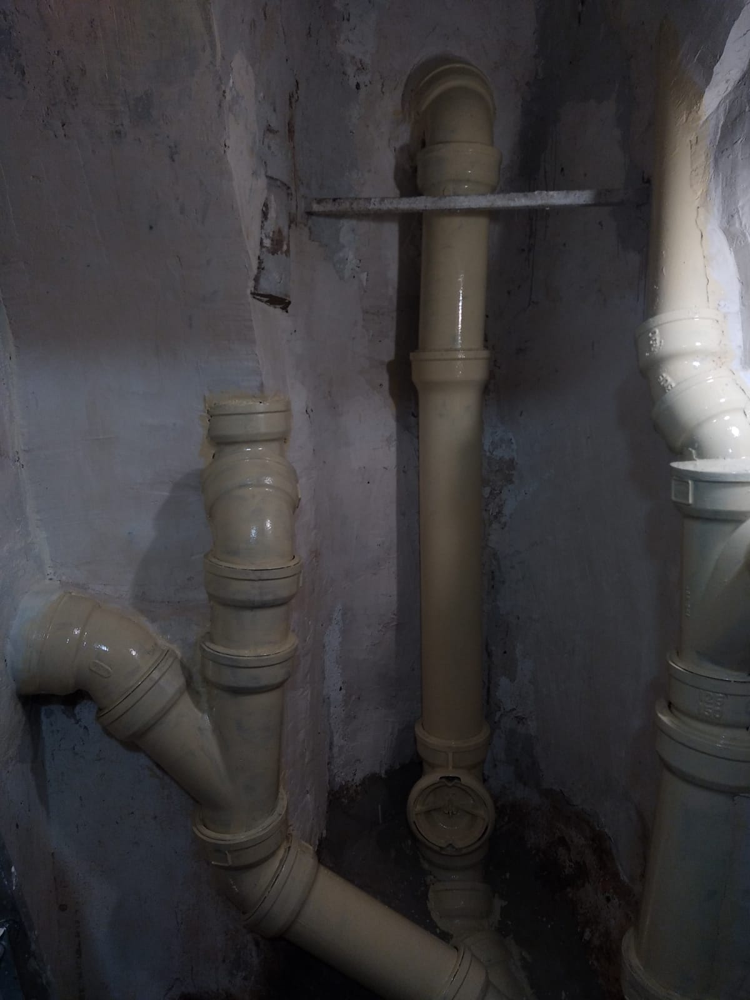
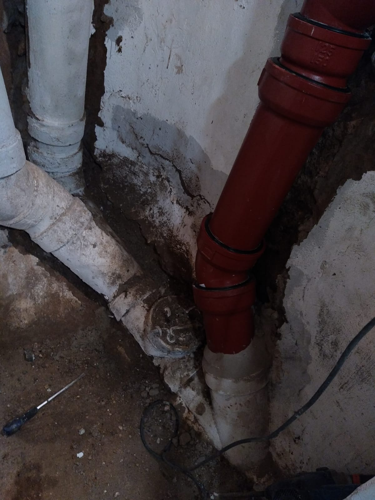

Colonne SME DN100 fuillarde sur 6 niveaux — 8 jours de chantier, occupants maintenus en place. Le compte-rendu complet par Khaled, technicien SOS FONTE.
Paris 17e, immeuble 1910 — chantier remplacement colonne EU fonte, 2024.
Contexte
Les immeubles construits entre 1880 et 1930 constituent une part importante du parc locatif parisien. Ils partagent un point commun souvent sous-estimé lors des transactions et des assemblées générales : leurs réseaux d'eaux usées (EU) sont en fonte grise de type SME, posés à l'origine et rarement remplacés depuis. Un siècle de service, sans entretien préventif systématique, finit toujours par se payer.
La fonte SME — système à emboîtement — des années 1900-1960 approche ou dépasse sa durée de vie théorique. La corrosion interne progresse silencieusement : d'abord des dépôts, puis des fissures, puis des perforations. Le problème n'est souvent signalé au syndic qu'au stade où les dégats deviennent visibles depuis les appartements — c'est-à-dire trop tard pour une simple réparation localisée.
C'est exactement la situation à laquelle nous avons été confrontés en 2024 dans un immeuble haussmannien du 17e arrondissement. Voici le déroulé complet de ce chantier.
Etape 1
Le signalement est venu du gardien de l'immeuble : traces d'humidité persistantes dans la gaine technique, odeur dans les parties communes, et un locataire du 3e étage qui constatait des remontées occasionnelles dans sa douche. Trois signaux qui, pris ensemble, pointent clairement vers une colonne EU défaillante.
Notre inspection a débuté par une visite visuelle complète de la gaine, cave comprise. Dès ce premier passage, plusieurs points de fuillarde — terme technique désignant une perforation par corrosion active, laissant suinter l'effluent — sont identifiés sur le tronçon de cave et aux emboîtements des niveaux intermédiaires. Un problème d'écoulement confirmait par ailleurs un colmatage partiel en partie haute de la colonne.
Une inspection par caméra a été réalisée pour cartographier avec précision l'état des 6 niveaux de la colonne. Le verdict était sans appel : plus de 60% de la longueur totale présentait des dégradations significatives — corrosion interne avancée, joints décollés, fissures longitudinales sur deux éléments. Dans ces conditions, une réparation localisée n'aurait été que provisoire et coûteuse à moyen terme.
Etape 2
Immeuble occupé, 6 niveaux, gaine technique de section standard haussmannienne. La contrainte principale : maintenir les occupants en place et ne couper l'accès aux sanitaires que par tranches planifiées de 4 heures maximum, communiquées par affichage 48h à l'avance.
Dépose de la colonne EU montante SME DN100
Déconnexion des piquages par niveau, découpe et extraction par tronçons des éléments fonte en place. La gaine est étroite — le travail se fait en accès séquentiel depuis les trémies de chaque palier. Tous les matériaux sont évacués en fin de journée. Protection des zones de travail pour limiter la nuisance aux résidents.
Pose de la nouvelle colonne fonte SMU+ DN100
Installation de la colonne neuve en fonte ductile SMU+, depuis la cave jusqu'au dernier niveau. Raccordements par niveau avec reprises des piquages individuels et vérification de la pente de chaque branchement. Chaque tranche de pose permet la remise en service provisoire du niveau concerné en fin de journée.
Remplacement du collecteur cave SME DN125 / DN150 / DN200
Le collecteur horizontal de cave — souvent oublié dans les premiers devis — était lui aussi en fonte SME, avec des diamètres progressifs (DN125 sous la colonne EU, DN150 puis DN200 vers le regard de branchement). Son état était critique : plusieurs sections corrodées de part en part, boites de jonction réalisées avec des produits inadaptés lors d'une intervention antérieure. Remplacement complet en fonte ductile avec pentes conformes et regard de nettoyage.
Tests d'étanchéité, rapport technique, remise en service
Test d'étanchéité par traçage colorant sur l'ensemble du réseau remplacé. Vérification des pentes et des raccordements. Rédaction du rapport technique complet avec photos, descriptif des travaux réalisés, références des matériaux posés et relevé des cotes. Remise en service complète et levée de toutes les protections.
Contrainte occupants : aucun résident n'a été contraint de quitter son logement. Les coupures d'accès aux sanitaires ont été limitées à des tranches de 4 heures maximum, notifiées 48h à l'avance par affichage sur chaque palier. Une coordination quotidienne avec le syndic a permis de respecter ce cadre sur l'ensemble des 8 jours.
Enseignements
SME vs SMU : le système a emboitement est plus difficile a reparer
Le SME (fonte a emboitement avec joint au plomb ou a l'aluminium) ne permet pas la meme souplesse de demontage et de reprise que le SMU ou le SMU+. Lorsque plusieurs emboitements sont deteriores sur une meme colonne, la reparation ponctuelle devient plus couteuse et moins fiable que le remplacement total — d'autant que les sections saines continuent de vieillir.
Les collecteurs de cave sont souvent absents des devis — c'est une erreur frequente
Sur ce chantier, comme sur beaucoup d'autres, le collecteur horizontal de cave etait dans un etat identique ou pire a la colonne montante. Un devis qui ne comprend que la colonne et ignore le collecteur expose le syndic a un second chantier quelques mois plus tard — avec les memes contraintes et les memes couts de mobilisation.
Le rapport technique post-chantier est un document opposable
Le rapport remis au syndic en fin de chantier — avec photos, descriptif des travaux, references materiaux et cotes — constitue un document technique opposable en cas de sinistre assurance ou de contestation lors d'une assemblee generale. Il fige l'etat du reseau a la date des travaux et protege a la fois le syndic et le prestataire. Exiger ce document fait partie d'une commande bien geree.
Documentation chantier
Paris 17e, immeuble 1910 — remplacement colonne EU SME DN100 + collecteur cave, 2024.

Etat de la fonte avant depose — corrosion active et fuillarde visibles

Depose en cours — troncon SME DN100 extrait de la gaine

Gaine technique apres depose, prete pour la nouvelle installation

Nouvelle colonne fonte ductile SMU+ DN100 — raccordements niveau par niveau

Nouveau collecteur cave DN125 — fonte ductile avec pentes conformes

Vue finale du reseau apres remise en service et test d'etancheite
Fiche chantier
Lieu
Paris 17e — Immeuble 1910
Duree
8 jours ouvrés
Colonne remplacée
SME DN100 → SMU+ DN100, 6 niveaux
Collecteur cave
SME DN125/150/200 → SMU+ complet
Occupants
Maintenus en place — coupures 4h max
Livrables
Rapport technique + photos post-chantier
Colonne fonte qui fuit, problème d'écoulement, syndic qui cherche un spécialiste — contactez-nous pour un diagnostic terrain et un rapport technique avant devis.
🚨 Une urgence fonte ? Ne laissez pas la situation s'aggraver.
Appeler maintenant